Laboratory Activities on 7ANALYTICS
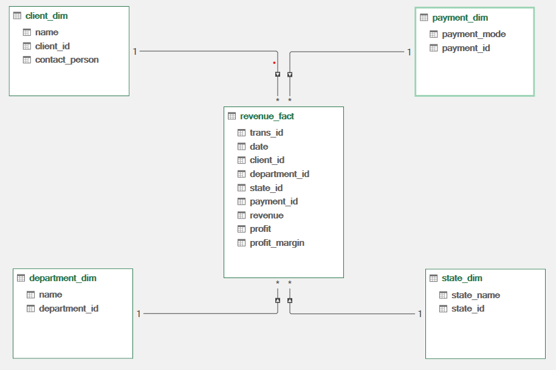
This task involves working with a sample dataset that contains unclean and inconsistent data. The goal is to prepare and clean the dataset by removing duplicate records, handling or filling null values, and ensuring the data is accurate and usable.
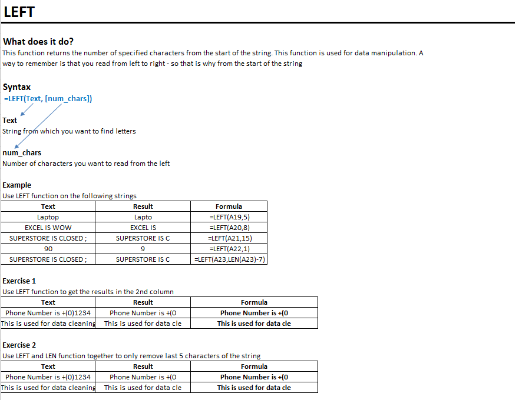
This Excel activity introduces various useful functions such as IF(), SUMIF(), LOWER(), UPPER(), and others that help automate calculations and manage data efficiently. Each section provides a short step-by-step procedure explaining how the function works and how it can be applied in a worksheet. After the instructions, a small activity is included to allow learners to practice using the function on their own.
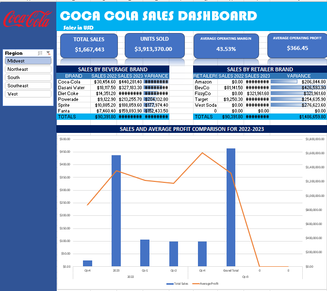
This focuses on demonstrating how to create interactive dashboards in Excel using prepared data. In this activity, we will organize data, create charts, and use Excel tools such as PivotTables and slicers to visualize information effectively. The task was instructed to us step-by-step on how different visual elements can be combined to build a clear and informative dashboard. By the end of the activity, users will understand how dashboards help summarize data and support better data analysis and decision-making.
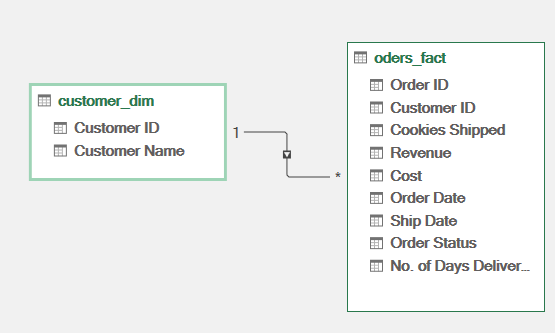
In this activity, I demonstrated how I used Power Query in Excel to clean and transform the dataset for analysis. I created two tables: customers_dim for customer information and orders_fact for transactional order data. I then connected these tables in the Data Model and displayed their relationship using a diagram to visualize how the dimension and fact tables are linked.
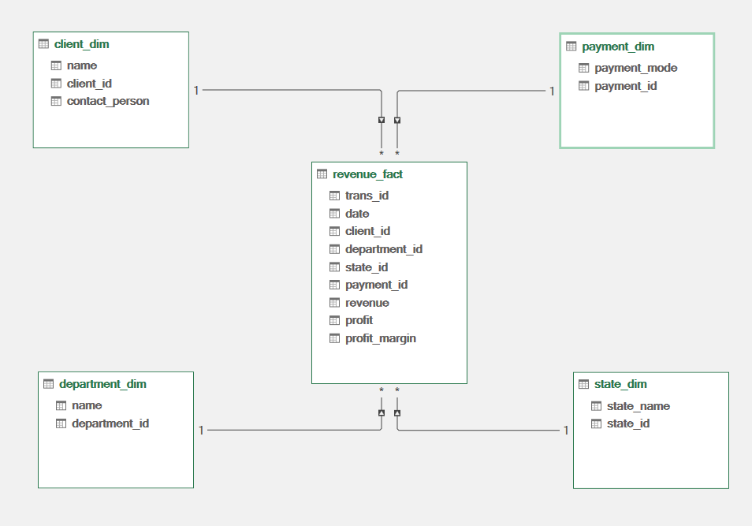
In this lab task, I performed data cleaning and preparation on a dataset that initially contained inconsistent and unstructured data. I removed duplicates, handled missing values, and organized the data into several dimension tables to separate descriptive information. These dimension tables were then connected to a single fact table that stores the main transactional data. Finally, I structured the tables into a snowflake schema to create a more organized and normalized data model for analysis.
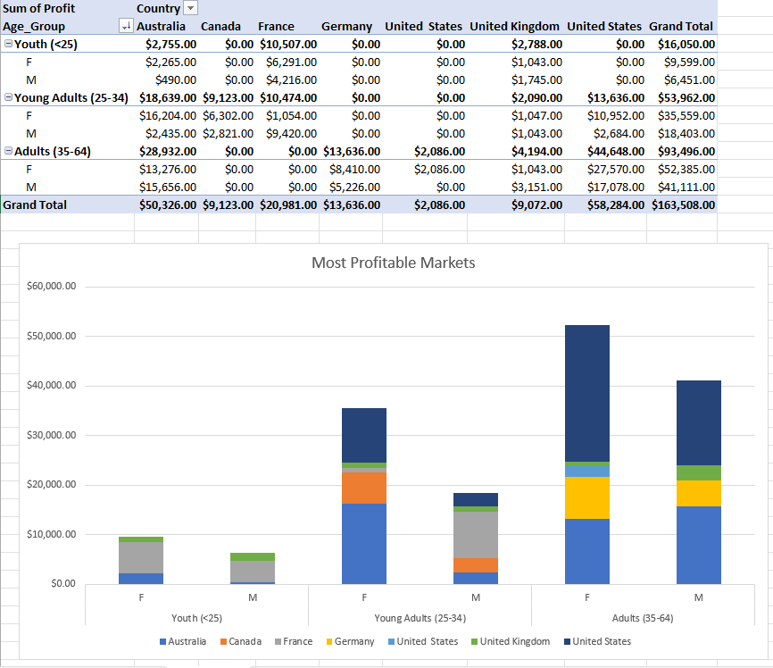
In this task, I worked with PivotTables and charts in Excel to analyze and visualize data. The task was divided into two challenges with different levels of difficulty. In Challenge 1, I followed a step-by-step procedure to create PivotTables and charts, which helped me understand the basic process and features. Challenge 2 was more challenging because it required me to apply what I learned without any provided instructions. This allowed me to independently build PivotTables and charts while strengthening my data analysis skills.
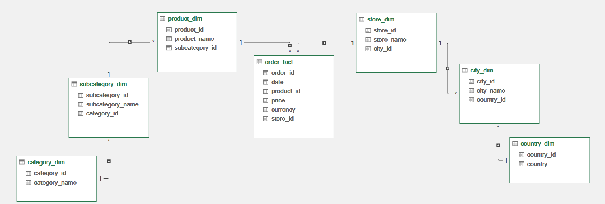
I used Power Query to clean and normalize the dataset to make the data more structured and organized. I separated the data into several dimension tables, including category_dim, subcategory_dim, country_dim, city_dim, product_dim, and store_dim. I also created an orders_fact table that contains the main transactional data for the dataset. After preparing these tables, I loaded them into the Data Model and established relationships between the fact table and each dimension table. Finally, I used a data model diagram to visualize how the tables are connected and how the normalized structure supports better data analysis.
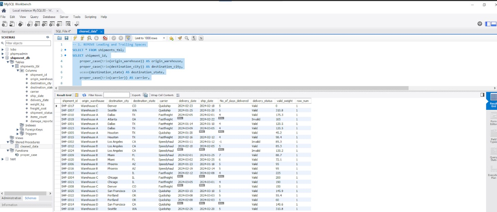
I successfully cleaned up my shipments_tbl dataset by standardizing text cases, trimming spaces, and converting my shipment strings into proper date formats. I also implemented clever CASE statements to automatically flag impossible delivery timelines and fix those weird negative package weights.
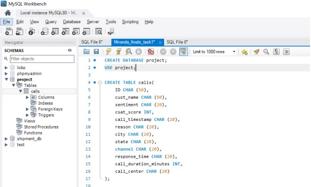
I created a custom MySQL database named project and structured a calls table to store key metrics like customer names, sentiments, CSAT scores, and call details. After defining the schema, I performed initial data cleaning by converting call timestamps into proper date objects and nullifying placeholder zero values in the CSAT column.
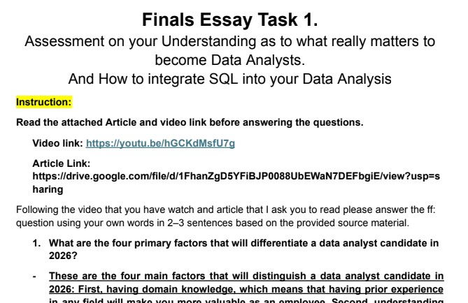
Assessment on your Understanding as to what really matters to become Data Analysts. And How to integrate SQL into your Data Analysis Workflow.
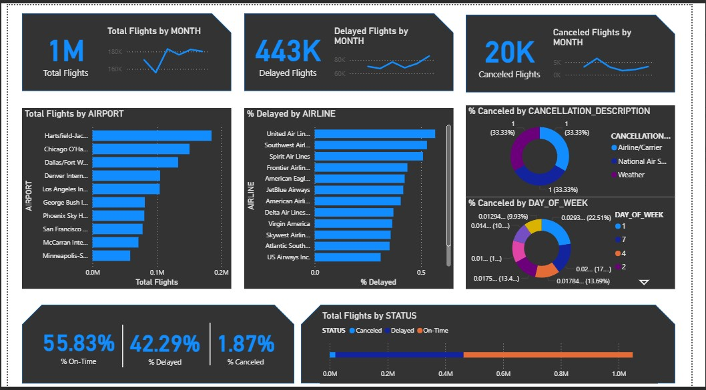
I built a Power BI dashboard by creating a robust star schema data model that seamlessly links a central table of 1 million flights to its corresponding airports, airlines, and cancellation codes. Through this model, I uncovered that while over 55% of the flights managed to remain on time, a massive 42.29% faced significant operational delays, particularly across hubs like Atlanta and major carriers like United Airlines.
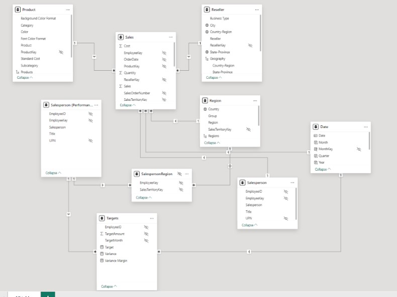
I constructed a comprehensive Power BI data model that establishes relationships between a central sales fact table and surrounding dimension tables for products, resellers, regions, and dates, while also configuring a separate targets matrix. Using DAX, I created advanced time-intelligence measures in a dedicated folder to dynamically calculate complex metrics such as Sales YTD and Sales YoY Growth.
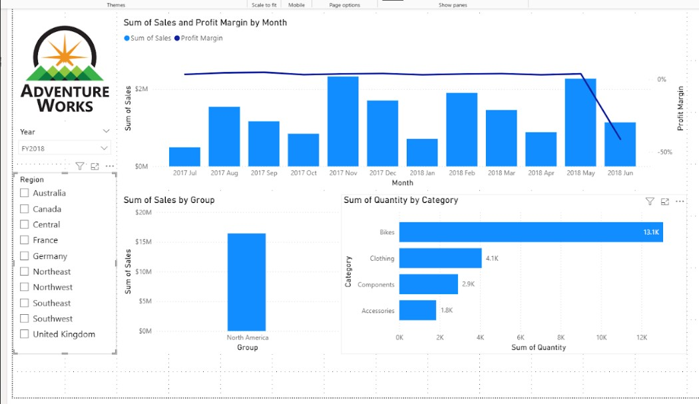
I designed and built an interactive Adventure Works sales dashboard in Power BI, mapping out monthly trends for total sales volumes and fluctuating profit margins across regional groups. I structured the visualizations to break down quantity orders by product categories—identifying bikes as my top-performing segment—while adding dynamic slicers to seamlessly filter results by fiscal year and geographic territory.
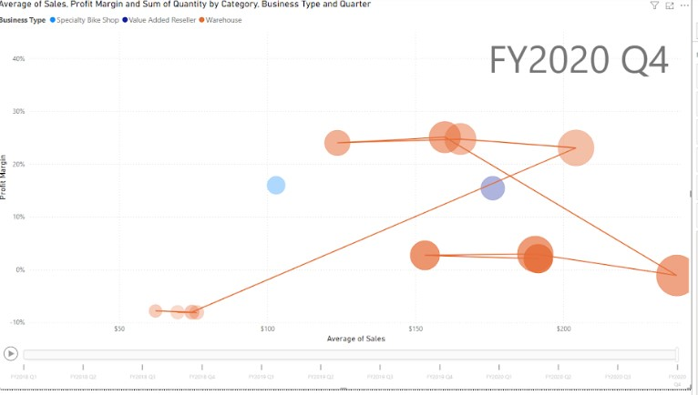
I configured dynamic motion scatter charts in Power BI to track multi-dimensional performance patterns, letting me witness the explicit trajectories of product categories like bikes and clothing across varying profit margins and quarterly sales averages. I also implemented advanced, timeline-driven line charts integrated with automated forecasting models to project future average sales trends based on historical spikes.
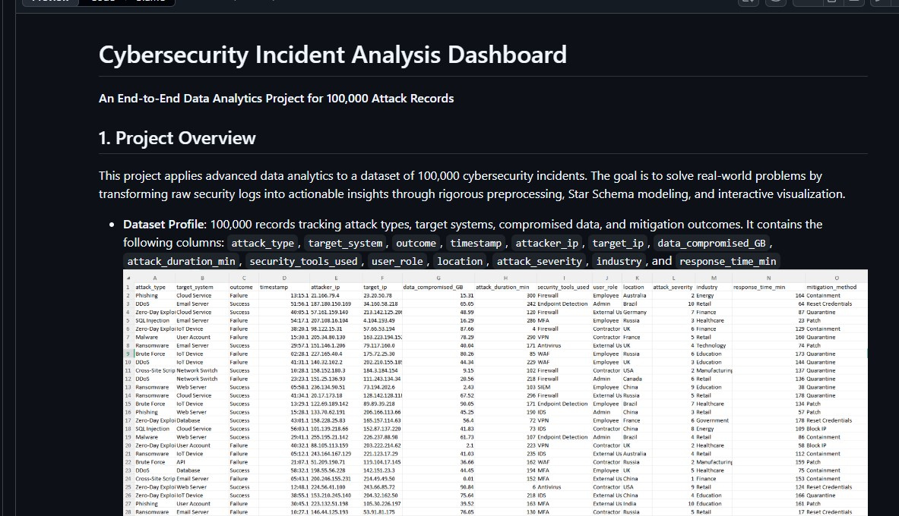
This final project covered several steps. In this, we chose a dataset revolving around cybersecurity attack incidents analysis. The group performed data cleaning, different frameworks (CLEAN, PYRAMID, DASH), data modeling, dashboard, and results. The final project was fully documented and published in GitHub.